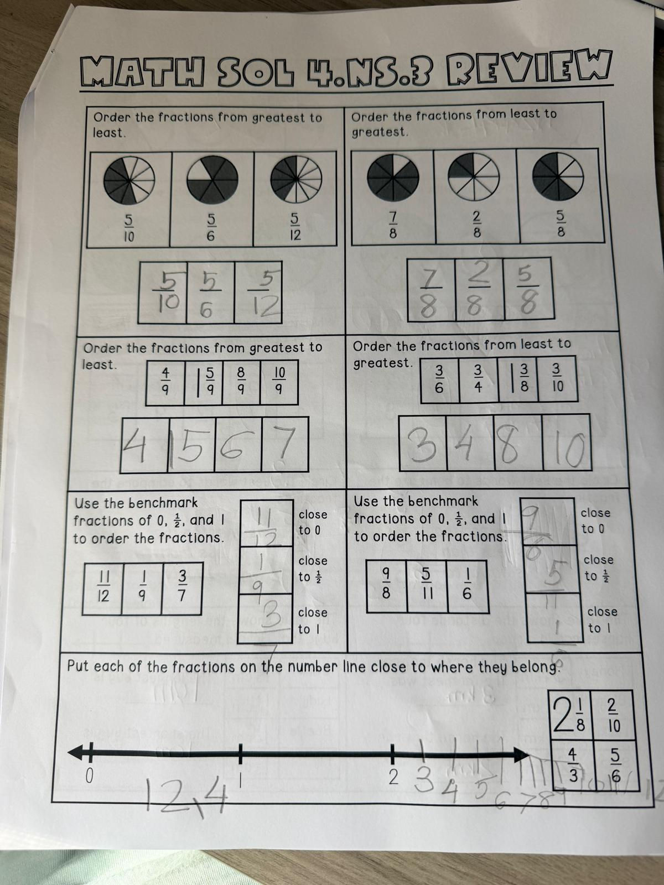

Order the fractions from greatest to least.
Fractions: 510, 56, 512
Order the fractions from least to greatest.
Fractions: 78, 28, 58
Order the fractions from greatest to least.
Fractions: 49, 59, 89, 109
Order the fractions from least to greatest.
Fractions: 36, 34, 38, 310
Use the benchmark fractions of 0, ½, and 1 to order the fractions.
Fractions: 1112, 19, 37
Use the benchmark fractions of 0, ½, and 1 to order the fractions.
Fractions: 98, 511, 16
Put each of the fractions on the number line close to where they belong.
Fractions to place: 218, 210, 43, 56
Write each fraction and the whole number it sits between: